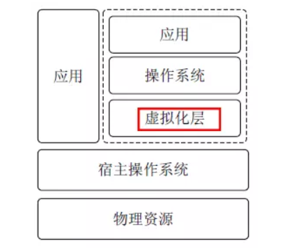
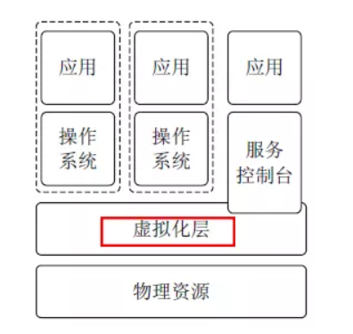
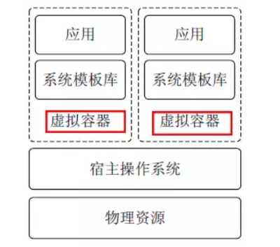
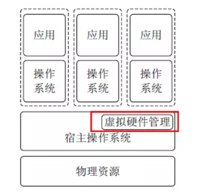
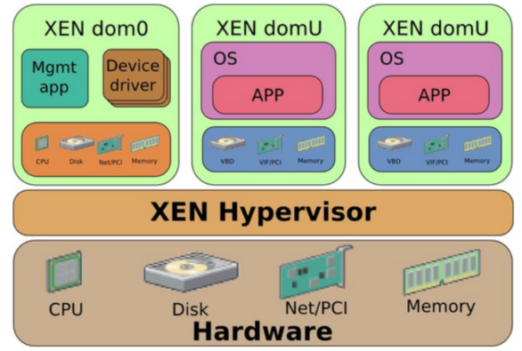
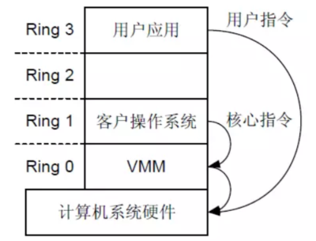
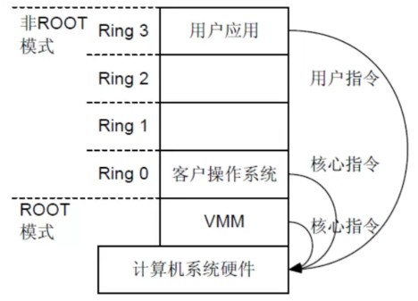

一、虚拟化基本概念
什么是虚拟化？
虚拟化是把物理的事物转换成为逻辑的方式表现出来
常见的虚拟化
内存虚拟化：内存页面Page File
磁盘虚拟化：RAID，Volume
网络虚拟化：vlan，vxlan
FusionSphere-x86/x64服务器的虚拟化
计算能力：CPU/Memory的虚拟化
存储：VIMS文件系统
网络：分布式虚拟交换机
虚拟化的优势
传统物流服务器
操作系统与物理服务器绑定
1.难以迁移
2.难以扩展
3.空间占用高
4.可靠性难以控制
5.资源利用率低
6.难以管理
虚拟化服务器
操作系统与物理服务器分离
1.易于迁移、扩展、资源整合
2.标准化的虚拟硬件
3.由一系列文件组成，易于保护
虚拟化常见概念
Guset OS：运行在虚拟机上的OS
Guset Machine：虚拟出来的虚拟机
Hypervisor：也叫VMM (Virtual Machine Monitor)虚拟机监控器，
Host OS：运行在物理机上的OS
Host Machine：物理机
模拟：emulation
x86 -> arm
sata -> scsi
完全虚拟化：Full Virtualization
开发人员直接针对物理平台开发即可，性能能达到硬件IDE的40%
CPU:
BT
HVM
半虚拟化：Para Virtualization
也叫不完全虚拟化，开发人员需针对虚拟化平台开发,性能能达到硬件IDE的80%
建议：生产环境一般使用半虚拟化技术：简单、性能好、易迁移上云
IAAS**：**CloudOS上部署xen或kvm这样的虚拟机，基础架构即服务
PAAS**：**CloudOS上直接提供一个容器作为平台，不需要用户安装操作系统，平台即服务
SAAS**：**本机只需运行个浏览器，其他全交给云来解决，软件即服务
以此延伸，近些年还出现了：
DBaas：数据库即服务
LBaas：负载均衡即服务
……
二、虚拟化常见架构类型
根据在整个系统中的位置不同，虚拟化架构分为以下几种：
1.寄居虚拟化架构
2.裸金属虚拟化架构
3.操作系统虚拟化架构
4.混合虚拟化架构
(一)寄居虚拟化架构
寄居虚拟化架构指在宿主操作系统之上安装和运行虚拟化程序，依赖于宿主操作系统对设备的支持和物理
资源的管理。（类似 Vmware Workstation 的程序）

优点：简单、易于实现
缺点：1.安装和运行应用程序依赖主机操作系统对设备的支持；
2.管理开销较大，性能损耗大
代表产品：**VMware Workstation**
2**）裸金属虚拟化架构**
裸金属虚拟化架构指直接在硬件上面安装虚拟化软件，再在其上安装操作系统和应用，依赖虚拟层内核和
服务器控制台进行管理。

优点：1.虚拟机不依赖操作系统
2.支持多种操作系统，多种应用
缺点：虚拟层内核开发难度大
代表产品：**WNware ESXServer、Citrix XenServer**
(三)操作系统虚拟化架构
操作系统虚拟化架构在操作系统层面增加虚拟服务器功能。操作系统虚拟化架构把单个的操作系统划分为
多个容器，使用容器管理器来进行管理。
宿主操作系统负责在多个虚拟服务器（即容器）之间分配硬件资源，并且让这些服务器彼此独立。

优点：1.简单、易于实现
2.管理开销非常低
缺点：隔离性查，多容器共享同一操作系统
代表产品：**Docker**
(四)混合虚拟化架构
混合虚拟化架构将一个内核级驱动器插入到宿主操作系统内核。这个驱动器作为虚拟硬件管理器来协调虚
拟机和宿主操作系统之间的硬件访问。

优点：1.相对于寄居虚拟化架构，没有冗余，性能高；
2.可支持多种操作系统
缺点：需底层硬件支持虚拟化拓展功能
代表产品：**Redhat KVM**
三、Xen架构简介

Domain U**：**运行在Xen Hypervisor上的普通虚拟机
Domain 0**：**运行在Xen Hypervisor上的特权虚拟机。它拥有访问物理I/O资源的权限，同时和系统上运
行的其他虚拟机进行交互。Domain 0必须要在其他Domain启动之前启动。
虚拟机复用有限的外设资源：
1)Hypervisor截获虚拟机对物理硬件的访问请求，然后通过软件的方式来模拟真实设备的效果；
2)前端设备驱动将数据通过VMM提供的接口转发到后端驱动
3)后端驱动VM的数据进行分时分通道的处理
四、CPU虚拟化原理介绍
(一)基于软件的CPU的虚拟化
基于软件的 CPU 虚拟化，故名思议，就是通过软件的形式来模拟每一条指令。通过前面的文章我们知道常
用的软件虚拟化技术有两种：优先级压缩和二进制代码翻译。这两种是通用技术，可以用在所有虚拟化类
型中。我们就结合 intercept 和 virtualize 来看看 CPU 软件虚拟化是怎么做的。
首先，一些必须的硬件知识要知道，X86 体系架构为了让上层的软件（操作系统、应用程序）能够访问硬
件，提供了四个 CPU 特权级别，Ring 0 是最高级别，Ring 1 次之，Ring 2 更次之，Ring 3 是最低级别。
一般，操作系统由于要直接访问硬件和内存，因此它的代码需要运行在最高级别 Ring 0 上，而应用程序的
代码运行在最低级别 Ring 3 上，如果要访问硬件和内存，比如设备访问，写文件等，就要执行相关的系统
调用，CPU 的运行级别发生从 Ring 3 到 Ring 0 的切换，当完成之后，再切换回去，我们熟悉的用户态和
内核态切换的本质就来自这里。
虚拟化的实现也是基于这个思想，VMM 本质上是个 Host OS，运行在 Ring 0 上，Guest OS 运行在 Ring 1
上，再往上是相应层次的应用程序运行在 Ring 2 和 Ring 3 上。

(二)基于硬件的CPU虚拟化
上面的这种截获再模拟的纯软件的虚拟化方式，势必是性能非常低的。那怎么样提高性能呢，有一种改进
的方式是修改 Guest OS 中关于特权指令的相关操作，将其改为一种函数调用的方式，让 VMM 直接执
行，而不是截获和模拟，这样就能在一定程度上提高性能。
但这种方式并不通用，要去改 Guest OS 的代码，只能看作是一种定制。为了能够通用，又能够提高性
能，就只能从硬件上去做文章了。所以，后来，以 Intel 的 VT-x 和 AMD 的 AMD-V 为主的硬件辅助的
CPU 虚拟化就被提出来（Intel VT 包括 VT-x （支持 CPU 虚拟化）、EPT（支持内存虚拟化）和 VT-
d（支持 I/O 虚拟化）。
CPU 硬件辅助虚拟化在 Ring 模式的基础上引入了一种新的模式，叫 VMX 模式。它包括根操作模式
（VMX Root Operation）和非根操作模式（VMX Non-Root Operation）。
这两种模式都有 Ring 0 – Ring 3 的特权级。所以，在描述某个应用程序时，除了描述其属于哪个特权级，
还要指明其处于根模式还是非根模式。
引入这种模式的好处就在于，Guest OS 运行在 Ring 0 上，就意味着它的核心指令可以直接下达到硬件层
去执行，而特权指令等敏感指令的执行则是由硬件辅助，直接切换到 VMM 执行，这是自动执行的，应用
程序是感知不到的，性能自然就提高了。

KVM 是一种硬件辅助的虚拟化技术，支持 Intel VT-x 和 AMD-v 技术。
五、内存虚拟化原理介绍
通过各种内存复用技术（零页共享、内存气泡和内存交换）与合理的调度，使主机上的虚拟机对内存的
访问及时响应，减少内存复用开启情况下的虚拟机性能损耗
(一)零页共享
将主机上的多个虚拟机的零页内存在物理内存中进行合并，释放出更多的物理内存供虚拟机使用。
(二)内存气泡
Hypervisor通过内存气泡将较空闲虚拟机内存释放给内存使用率较高的虚拟机，用来提升内存利用率。
内存气泡技术对虚拟机性能影响较小，但是在内存减少时，用户能感知到
(三)内存交换
当虚拟机的内存压力较大时，将虚拟机内存页交换到磁盘中从而释放内存；
当虚拟机内存页交换到磁盘后，虚拟机的性能将下降比较明显